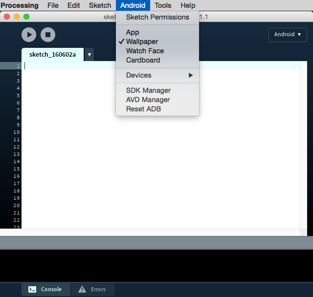

Use the Android Mode to develop interactive live wallpapers
(This tutorial is applicable only to version 4+ of the mode)
Live wallpapers are a special type of applications that generate animated and interactive backgrounds in the home screen of the device. Technically, they are an Android Service, designed to run for a long time in the background. With the Android mode in Processing, you don't need to implement these low-level details, and instead focus on the drawing code. Virtually any 2D or 3D sketch can be built as a live wallpaper. All you need to do is to select the Wallpaper option in the Android menu:
Let's write a simple wallpaper that uses the compass orientation to create a geometrical pattern. Based on the sensors tutorial, we can start off with the following code:
import android.content.Context; import android.hardware.Sensor; import android.hardware.SensorEvent; import android.hardware.SensorEventListener; import android.hardware.SensorManager; Context context; Sensor compass; float direction; void setup() { fullScreen(); context = (Context) surface.getComponent(); SensorManager sensorManager = (SensorManager)context.getSystemService(Context.SENSOR_SERVICE); CompassEventListener listener = new CompassEventListener(); compass = sensorManager.getDefaultSensor(Sensor.TYPE_MAGNETIC_FIELD); sensorManager.registerListener(listener, compass, SensorManager.SENSOR_DELAY_NORMAL); } void draw() { } class CompassEventListener implements SensorEventListener { public void onSensorChanged(SensorEvent event) { float x = event.values[0]; direction = -x * PI / 180; } public void onAccuracyChanged(Sensor sensor, int accuracy) { } }
Note that the context required to retrieve the sensor manager is obtained from the app component associated to the surface, which is a PWallpaper object. PWallpaper extends WallpaperService, which extends Service, and ultimately ContextWrapper and Context. The delay to obtain the sensor data is set to SENSOR_DELAY_NORMAL, which is the slowest from all the default rates and suitable for a wallaper. An important consideration with wallpapers is to keep battery use at a minimum, as they run in the background constantly. So, when using sensors is a good idea to keep a low update rate, that's still ok for the purpose of generating the background. In fact you can set your own rate:
int READING_RATE = 100000; // time in us sensorManager.registerListener(listener, compass, READING_RATE);
Now we can implement the drawing function. Let's use a bunch of particles that move following the direction of the magentic field, plus a small perturbabtion from the noise function:
void setup() { fullScreen(); frameRate(15); context = (Context) surface.getComponent(); SensorManager sensorManager = (SensorManager)context.getSystemService(Context.SENSOR_SERVICE); CompassEventListener listener = new CompassEventListener(); compass = sensorManager.getDefaultSensor(Sensor.TYPE_MAGNETIC_FIELD); sensorManager.registerListener(listener, compass, SensorManager.SENSOR_DELAY_NORMAL); background(255); noStroke(); fill(150, 50); particles = new PVector[100]; for (int i = 0; i &lr; 100; i++) { particles[i] = new PVector(random(width), random(height)); } } void draw() { float dirx = cos(direction); float diry = sin(direction); for (int i = 0; i &lr; 100; i++) { PVector v = particles[i]; float vx = v.x; float vy = v.y; v.x += dirx + noise(vx / 100.0, vy / 100.0, millis() / 1000.0); v.y += diry + noise(vx / 100.0, vy / 100.0, millis() / 1000.0); if (v.x &lr; 0 || width &lr; v.x) { v.x = random(width); } if (v.y &lr; 0 || height &lr; v.y) { v.y = random(height); } ellipse(v.x, v.y, 10, 10); } }
When you run the sketch on the device, you won't see it right away. You need to open the wallpaper selector, and browse the installed wallpapers until you find the one you just run from Processing.